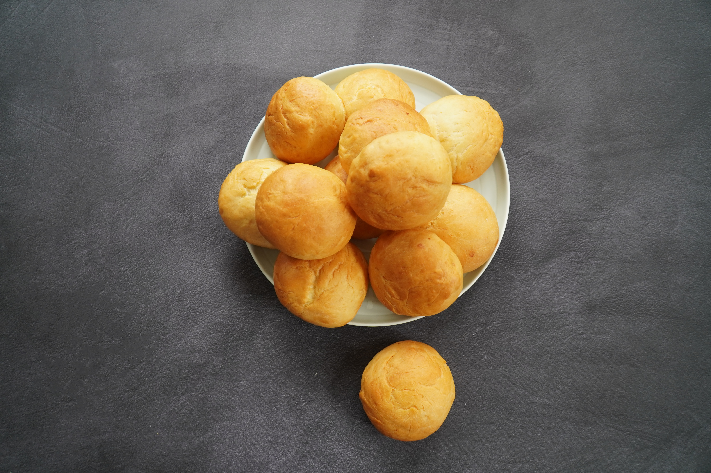

Bread Roll

Namaste Flour Hawaiian Bread Rolls
Great to go with salad or soup or just to have.
Ingredients
- 2 1/2 cups Namaste Flour
- 1 package yeast
- 1 cup warm water
- 1/4 cup melted butter, margarine or oil
- 2 Tbsp. honey or sugar
- 2 eggs
- Combine warm water, yeast and sugar in large bowl. Set aside for at least 5 minutes.
- In small bowl combine eggs and melted butter or oil. Mix in bread mix. Add to yeast mixture and beat with an electric mixer on medium speed. Scrape the sides of bowl down as you go.
- Lightly grease or spray muffin tin. Spoon batter into tins to about 2/3 full. Cover loosely with sprayed wax paper or plastic wrap and towel and let rise for at least 30 minutes in a warm place. Preheat oven to 400° F while rolls are rising.
- Bake for 10-14 minutes until tops are golden brown.
Back to home